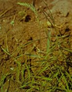
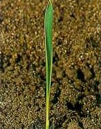
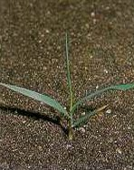

TARACKBÚZA
AGROPYRON REPENS (L.) Beauv. (AGRRE)
ÉLETFORMA: G1
TERMÉS: A toklászos szem 8-10 mm hosszú, keskeny
lándzsás, rövid szálkahegyű. A háti toklász 5-7 erű, a középér erősebb. A hasi
toklász enyhén csatornás, hegyes, háromnegyede a háti toklász hosszának, gerincei
serteszerű pillásszőrökkel fedettek. A szem a hasi toklászhoz nőtt, mintegy 5 mm
hosszú, hosszúkás lándzsás. Ezerszem-tömege 3,5-3,8 g.
CSÍRANÖVÉNY: A szemtermések mintegy 4 évig életképesek
a talajban, két-három év után azonban az életképesség rohamosan csökken. A fény
serkenti a csírázást. A szemek elsősorban a talaj felszínéről, valamint a felső
3-5 cm-es talajrétegből csíráznak. A szemek zöme tavasszal csírázik. A legfiatalabb
(középső) levél begöngyölt. Levélnyelvecskéje nagyon rövid, egyenesen levágott,
finoman fogazott (többnyire csak nagyítóval látható). Nagykaromszerűen átnyúló
levélfülecskéi vannak. Leggyakrabban a tarackból kihajtó egyedekkel találkozunk. A
magról kelő növényeken a 40-50. napon indul meg az új tarackok képzése.
Levéllemeze színén és fonákán finoman bordázott, többnyire kopasz, olykor szórtan
szőrös. Levélhüvelye szabálytalanul pillás, szőrözött vagy kopasz. A
levéllemezalap világosabb, mint a levéllemez és a levélhüvely. Virágzata laza
kalász. A füzérkék – szemben a perje- (Lolium) fajokkal – a szélesebb
oldalukkal simulnak a kalász tengelyhez. A füzérkék 4-6 virágúak, 10-20 mm
hosszúak. Magassága 30-100 cm. A virágzás kezdete általában június és attól
kezdve folyamatos. Idegen megporzású növény. Tarackjai dúsan elágazók és a talaj
felső 5-20 cm mélységében találhatók. Egy-egy növény tarackjai a vegetációs
időszak végén mintegy 150 cm sugarú körben helyezkednek el. A tarackok mintegy 3 mm
vastagok, a csomók és az axilláris rügyek 2-3 cm távolságra vannak egymástól. A
tarackok május végén és júniusban úgynevezett tavasz végi, nyár eleji
mélynyugalmi állapotban vannak. A hőmérséklet és a fotoperiódus befolyásolja az
oldalhajtás és a tarackképzés arányát. 25 °C feletti hőmérsékleten erőteljes az
oldalhajtások képzése, a 10 °C körüli hőmérséklet pedig a tarackok
fejlődésének kedvez. Ha a nappalok hossza 9-10 órára csökken, a tarackok képzése
teljesen megszűnik. Elsősorban a kötött talajokat szereti.
KIFEJLETT NÖVÉNY: Az egyik legelterjedtebb és legterhesebb
évelő gyompázsitfű.
 |
 |